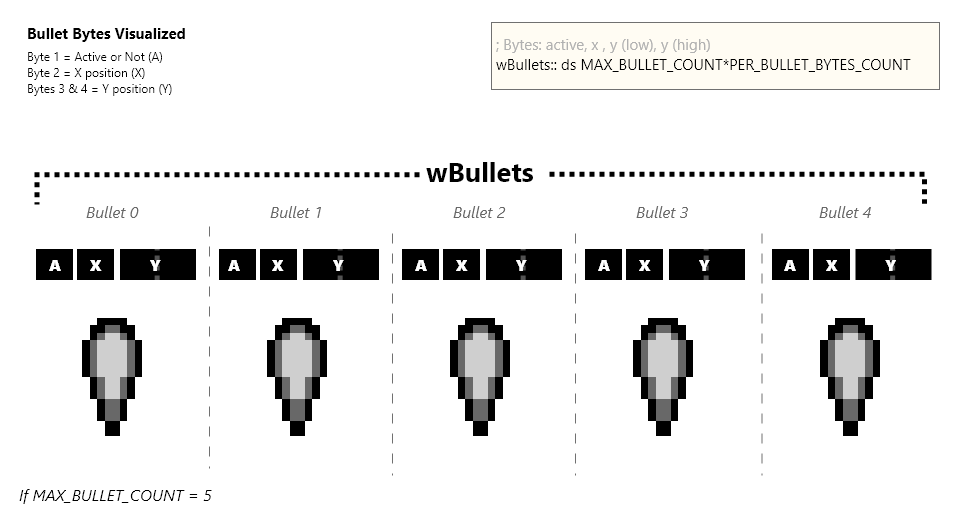

Bullets
Bullets are relatively simple, logic-wise. They all travel straight-forward, and de-activate themselves when they leave the screen.
At the top of our “src/main/states/gameplay/objects/bullets.asm” file we’ll setup some variables for bullets and include our tile data.
include "src/main/includes/hardware.inc"
include "src/main/includes/constants.inc"
SECTION "Bullets", ROM0
We’ll need to loop through the bullet object pool in the following sections.
Initiating Bullets
In our “InitializeBullets” function, we’ll copy the tile data for the bullet sprites into VRAM, and set every bullet as inactive. Each bullet is 4 bytes, the first byte signaling if the bullet is active or not.

We’ll iterate through bullet object pool, named “wBullets”, and activate the first of the the four bytes. Then skipping the next 3 bytes, to go onto the next bullet. We’ll do this until we’ve looped for each bullet in our pool.
Updating Bullets
When we want to update each of bullets, first we should check if any bullets are active. If no bullets are active we can stop early.
If we have active bullets, we’ll reset how many bullets we’ve checked and set our “hl” registers to point to the first bullets address.
When were updating each bullet, we’ll check each byte, changing hl (the byte we want to read) as we go. At the start, “hl” should point to the first byte. “hl” should point to the first byte at the end too:
HL should point to the first byte at the end so we can easily do one of two things:
- deactivate the bullet
- jump to the next bullet (by simply adding 4 to hl)
For we each bullet, we’ll do the following:
- Check if active
- Get our x position, save into b
- Get our y scaled positon, save into c (low byte), and d (high byte)
- Decrease our y position to move the bullet upwards
- Reset HL to the first byte of our bullet
- Descale the y position we have in c & d, and jump to our deactivation code if c (the low byte) is high enough
- Draw our bullet metasprit, if it wasn’t previously deactivated
Drawing the Bullets
We’ll draw our bullet metasprite like we drew the player, using our “DrawMetasprites” function. This function may alter the ‘h’ or ‘l’ registers, so we’ll push the hl register onto the stack before hand. After drawing, we’ll pop the hl register off of the stack to restore it’s value.
Deactivating the Bullets
If a bullet needs to be deactivated, we simply set it’s first byte to 0. At this point in time, the “hl” registers should point at our bullets first byte. This makes deactivation a really simple task. In addition to changing the first byte, we’ll decrease how many bullets we have that are active.
Updating the next bullet
After we’ve updated a single bullet, we’ll increase how many bullet’s we’ve updated. If we’ve updated all the bullets, we can stop our “UpdateBullets” function. Otherwise, we’ll add 4 bytes to the addressed stored in “hl”, and update the next bullet.
Firing New Bullets
During the “UpdatePlayer” function previously, when use pressed A we called the “FireNextBullet” function.
This function will loop through each bullet in the bullet object pool. When it finds an inactive bullet, it will activate it and set it’s position equal to the players.
Our bullets only use one 8-bit integer for their x position, so need to de-scale the player’s 16-bit scaled x position
FireNextBullet::
ld hl, wObjects+BULLETS_START
ld b, MAX_BULLET_COUNT
; Get the next available bullet, and put it's address in hl
; if the zero flag is set, stop early
call GetNextAvailableObject_InHL
ret z
That’s it for bullets logic. Next we’ll cover enemies, and after that we’ll step back into the world of bullets with “Bullet vs Enemy” Collision.